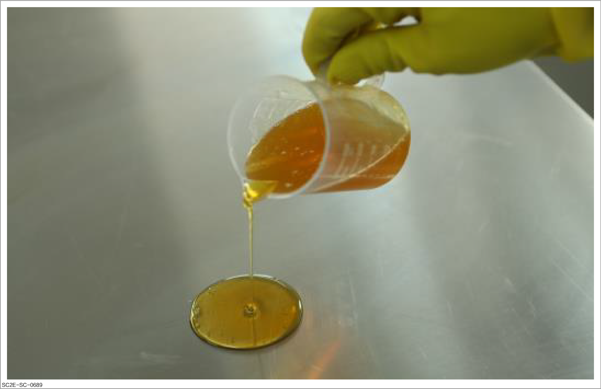
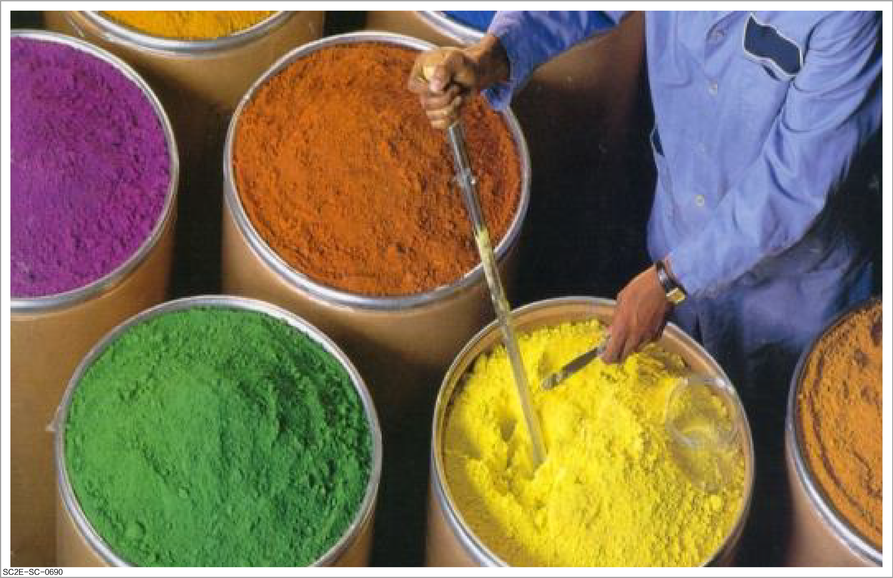
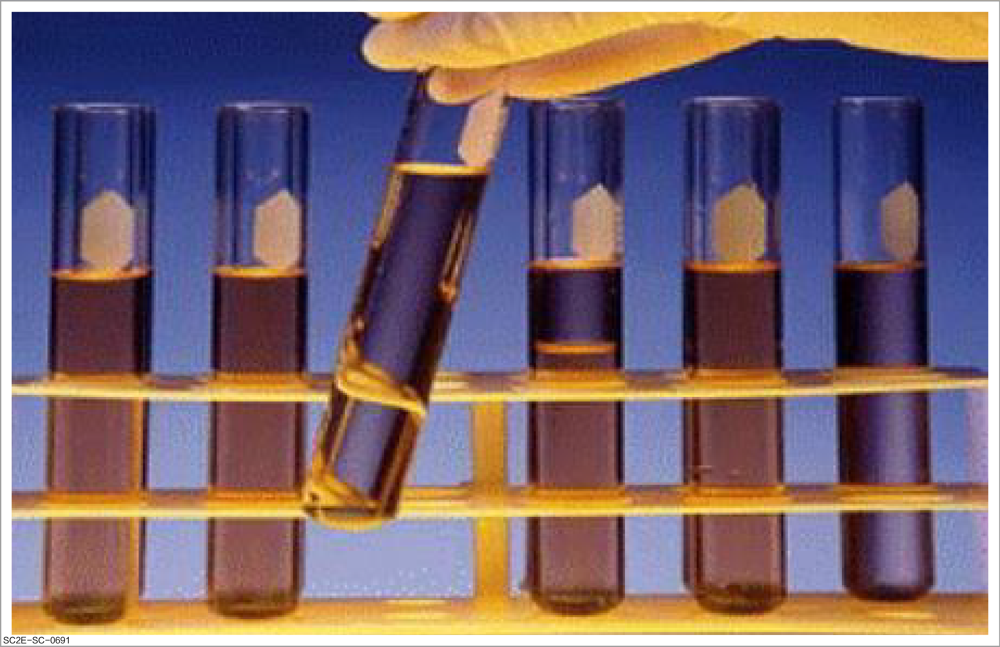
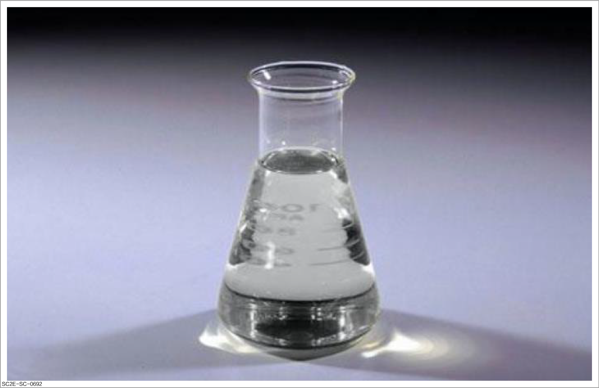
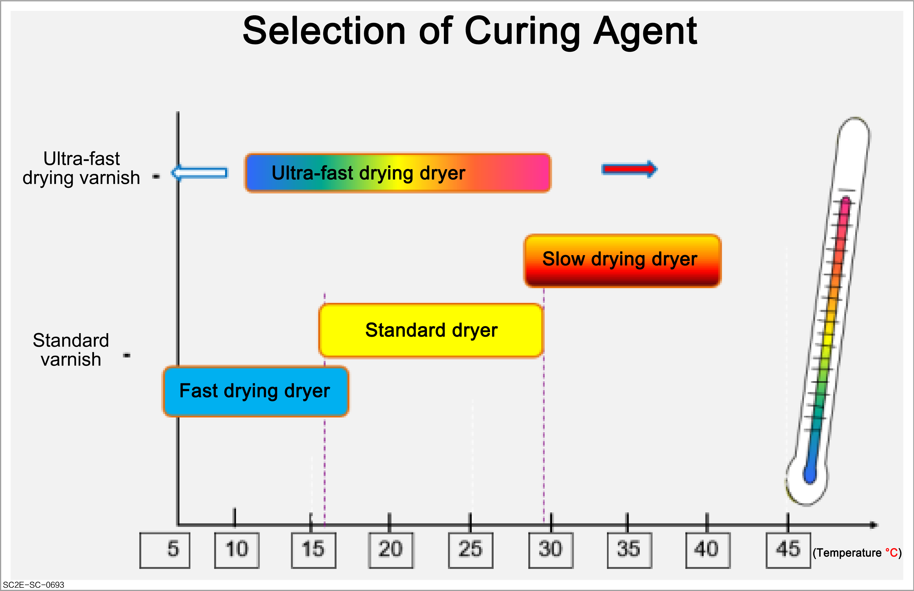

Paint is a liquid composed of resins , pigments , additives , solvents , and curing agent , usually diluted with thinner to the viscosity suitable for painting before being used.
Characteristic: transparent liquid, used to increase gloss, hardness, and adhesion. This component can make the liquid paint form a "paint film" after the drying and curing process.
Types: natural resin and synthetic resin. It is one of the main components constituting the paint film. Its properties determine the final effect of the paint and the performance of the paint film. It is the most important component in the paint film.
Natural resin: It is generally extracted from animals and plants, such as shellac and turpentine.
Synthetic resin: It is mainly extracted from petroleum.

Characteristic:
It is powdery and can provide color for the coating and increase its thickness. The pigment is insoluble in solvents and is added to the paint to provide color and fillibility.
It is an extremely fine powdery colored substance insoluble in water, oil, and solvent. It is usually divided into organic pigment and inorganic pigment.
Type: classified by purpose:
Tinting pigment: It is used for coloring.
Bright pigment: It increases gloss, such as metallic color or pearlescent effect.
Body pigment: It increases the coating thickness.
Anti-rust pigment: It has anti-rust effect.
Matting pigment: It reduces resin gloss.

Purpose:
It is used to prevent bubbles, pigment precipitation or improve coating performance. There are mainly two types of additives. One is used by paint manufacturers, and the other is used by sprayers.
Paint manufacturers use additives to optimize the performance of paint products.
Type:
Pigment dispersant: It helps to disperse pigments and prevent the dispersed pigments from polymerizing with adhesive.
Ultraviolet absorbent: It absorbs ultraviolet rays to avoid deterioration of the paint surface caused by sunlight.
Defoaming agent: It prevents the formation of foam, which will form bubbles during the paint spraying operation.
Leveling agent: It enables the paint to level out and facilitate the formation of a smooth coating.
Anti-settling agent: It evenly disperses the pigment in the paint to avoid uneven color concentration caused by paint precipitation.
Soft additive: It changes the elasticity of intermediate paint, top coat, and varnish.
Drying accelerator: It accelerates the chemical drying of the two-component intermediate paint, top coat, and varnish at low temperatures or in minor repair scenarios.
Matting agent: It reduces the glossiness of the top coat or varnish.
Anti-fish eye solution: It prevents the occurrence of fish eyes when the paint or the surface contains contaminants.

Characteristic:
It is a liquid that dissolves resin and helps blend pigments. The solvent is volatile, so there will be no solvent residue after the coating is dried.
The solvent can completely evaporate after the paint is dried and there will be no solvent residue in the paint film.
Purpose: As the viscosity of the resin is very high, a solvent is used to dilute it to the appropriate viscosity, giving it fluidity and spreadability.
Instructions for use:
Different resins use different solvents as dissolving agents and thinners.
When in use, the thinner suitable for the evaporation speed shall be selected according to the operation temperature. For example, thinners are classified into different types according to the evaporation speed, including fast, medium, slow, and extremely slow speed thinners.
If the solvent volatilizes too fast, the viscosity of wet paint film will increase too quickly. Without sufficient leveling time, the leveling performance will be poor, resulting in uneven coating surface and defects such as the orange peel effect and wrinkle. Adhesion problems will also occur due to insufficient wetting of the substrate by the paint film.
If the solvent evaporates too slowly, it will affect the reaction speed of resin and curing agent in the coating, resulting in defects such as insufficient hardness of the paint film. The paint film on the vertical surface is prone to sagging.

Characteristic: The curing agent is the main component of paints and reacts chemically with resin to bind molecules, thus forming a hard coating.
Purpose: It is mainly used in two-component paints, which can react chemically with synthetic resin to dry and form a paint film.
Instructions for use:
Isocyanate in the curing agent is easy to react with moisture in the air, so care shall be taken in storage and use.
This substance is toxic and should be noted during construction. Wear a gas mask and rubber gloves when mixing and applying the paint.
